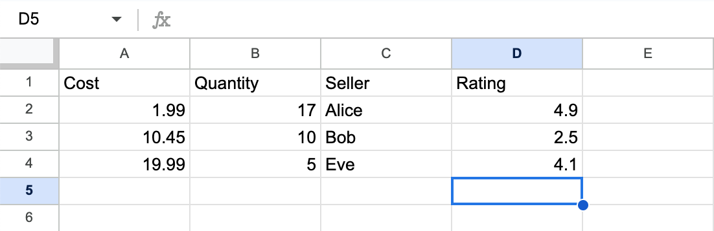

Lecture 3: August 11th, 2023#
Reminders:
Keep working on HW1 and HW2
Anthony plans to go over homework on Friday and Monday; definitely attend if you’d like some help
Recap: Recall in the last lecture we were thinking about how to represent the following data in python. We were also tasked with computing the average of the “Rating” column. We saw that as a list of lists it was pretty clunky…

#from last lecture
mylist = [
[1.99,17,"Alice",4.9],
[10.45,10,"Bob",2.5],
[19.99,5,"Eve",4.1]
]
Why pandas? Wrong Approach 2#
We know that NumPy is very good at dealing with arrays. What if we tried to store our data with NumPy instead?
import numpy as np
mylist
[[1.99, 17, 'Alice', 4.9], [10.45, 10, 'Bob', 2.5], [19.99, 5, 'Eve', 4.1]]
#first, let's convert this list into a NumPy array
arr = np.array(mylist)
arr
array([['1.99', '17', 'Alice', '4.9'],
['10.45', '10', 'Bob', '2.5'],
['19.99', '5', 'Eve', '4.1']], dtype='<U32')
If you look carefully, you might realize something is “off” about arr…
type(arr)
numpy.ndarray
Recall: our original goal was to compute the average of the ratings column. So let’s try to get that done here.
# get all rows in the last column
arr[:,-1]
array(['4.9', '2.5', '4.1'], dtype='<U32')
Notice, for multi-dimensional slicing, this doesn’t work for lists
#Same slicing fails for a list
mylist[:,-1]
---------------------------------------------------------------------------
TypeError Traceback (most recent call last)
Input In [7], in <cell line: 2>()
1 #Same slicing fails for a list
----> 2 mylist[:,-1]
TypeError: list indices must be integers or slices, not tuple
arr[:,-1].mean()
---------------------------------------------------------------------------
UFuncTypeError Traceback (most recent call last)
Input In [8], in <cell line: 1>()
----> 1 arr[:,-1].mean()
File ~/opt/miniconda3/envs/math9/lib/python3.9/site-packages/numpy/core/_methods.py:180, in _mean(a, axis, dtype, out, keepdims, where)
177 dtype = mu.dtype('f4')
178 is_float16_result = True
--> 180 ret = umr_sum(arr, axis, dtype, out, keepdims, where=where)
181 if isinstance(ret, mu.ndarray):
182 ret = um.true_divide(
183 ret, rcount, out=ret, casting='unsafe', subok=False)
UFuncTypeError: ufunc 'add' did not contain a loop with signature matching types (dtype('<U32'), dtype('<U32')) -> None
What’s going wrong: NumPy wants all of the entries in an array to have the same data type.
In many datasets, having multiple different data types makes sense. Even in this small example, we have floats, ints, and strings, and they all make sense based on the column that they’re in.
mylist
[[1.99, 17, 'Alice', 4.9], [10.45, 10, 'Bob', 2.5], [19.99, 5, 'Eve', 4.1]]
When we convert mylist to arr, NumPy assumes that every entry should be a string based on the fact that elements from the sellers column are stored as strings.
That being said, we can still compute the average pretty easily. Here’s how:
#interpret as floats
arr[:,-1].astype(float)
array([4.9, 2.5, 4.1])
arr[:,-1].astype(float).mean()
3.8333333333333335
To deal with specific elements we could cast to a float.
float(arr[0,-1])
4.9
In both of these conversion examples, we’re converting data on an as-need basis. There’s no way of setting the dtyle for just one column of the array.
Why pandas? Right Approach#
In this section, we’ll formally introduce pandas. For Math 10, pandas is the most important python library.
pandas is like the python equivalent of Excel.
Convert
mylistto a pandas DataFrame
#pd is a standard naming convention
#always use it in Math 10
import pandas as pd
mylist
[[1.99, 17, 'Alice', 4.9], [10.45, 10, 'Bob', 2.5], [19.99, 5, 'Eve', 4.1]]
pd.DataFrame(mylist)
| 0 | 1 | 2 | 3 | |
|---|---|---|---|---|
| 0 | 1.99 | 17 | Alice | 4.9 |
| 1 | 10.45 | 10 | Bob | 2.5 |
| 2 | 19.99 | 5 | Eve | 4.1 |
This is already a huge improvement from NumPy; notice that each column has its own data type.
What does
objectmean? Object is a data type that typically not one of the specialized numerical values that pandas recognizes. You’ll it a lot with strings, lists, etc.
#Question: will the following work?
pd.mylist
---------------------------------------------------------------------------
AttributeError Traceback (most recent call last)
Input In [16], in <cell line: 2>()
1 #Question: will the following work?
----> 2 pd.mylist
File ~/opt/miniconda3/envs/math9/lib/python3.9/site-packages/pandas/__init__.py:261, in __getattr__(name)
257 from pandas.core.arrays.sparse import SparseArray as _SparseArray
259 return _SparseArray
--> 261 raise AttributeError(f"module 'pandas' has no attribute '{name}'")
AttributeError: module 'pandas' has no attribute 'mylist'
pd. is looking for a function defined in pandas. In this example, pandas is looking for a function called mylist.
Read in the
sample-data.csvdirectly using the pandas functionread_csv. Save the resulting DataFrame using the variable namedf.
This is the most common way we’ll get data in to pandas.
We’ll mostly work with csv (comma separated values) files
If you’re interested in working with Excel files, the process is almost exactly the same, but there are a few extra steps; in most cases, it’s easier to convert your file first to csv and then import.
df = pd.read_csv("sample-data.csv")
df
| Cost | Quantity | Seller | Rating | |
|---|---|---|---|---|
| 0 | 1.99 | 17 | Alice | 4.9 |
| 1 | 10.45 | 10 | Bob | 2.5 |
| 2 | 19.99 | 5 | Eve | 4.1 |
Among all the methods we’ve seen so far, this is the first one that gives us the names of the columns!
Evaluate the
dtypesattribute ofdf
# DataFrame object
type(df)
pandas.core.frame.DataFrame
df.dtypes
Cost float64
Quantity int64
Seller object
Rating float64
dtype: object
Define
colto be equal to the “Rating” column
df
| Cost | Quantity | Seller | Rating | |
|---|---|---|---|---|
| 0 | 1.99 | 17 | Alice | 4.9 |
| 1 | 10.45 | 10 | Bob | 2.5 |
| 2 | 19.99 | 5 | Eve | 4.1 |
#first example of indexing, here's how we can get a column
col = df["Rating"]
col
0 4.9
1 2.5
2 4.1
Name: Rating, dtype: float64
Notice, col is a different data type from df
type(col)
pandas.core.series.Series
col is what’s called a pandas Series. You can think of Series as columns of DataFrames.
To recap: the two most important data types in pandas are DataFrames and Series.
#Great question asked: will the following give the same thing?
#Not quite, but we'll see how to make it work in the next section
df[:,3]
---------------------------------------------------------------------------
TypeError Traceback (most recent call last)
File ~/opt/miniconda3/envs/math9/lib/python3.9/site-packages/pandas/core/indexes/base.py:3629, in Index.get_loc(self, key, method, tolerance)
3628 try:
-> 3629 return self._engine.get_loc(casted_key)
3630 except KeyError as err:
File ~/opt/miniconda3/envs/math9/lib/python3.9/site-packages/pandas/_libs/index.pyx:136, in pandas._libs.index.IndexEngine.get_loc()
File ~/opt/miniconda3/envs/math9/lib/python3.9/site-packages/pandas/_libs/index.pyx:142, in pandas._libs.index.IndexEngine.get_loc()
TypeError: '(slice(None, None, None), 3)' is an invalid key
During handling of the above exception, another exception occurred:
InvalidIndexError Traceback (most recent call last)
Input In [23], in <cell line: 3>()
1 #Great question asked: will the following give the same thing?
2 #Not quite, but we'll see how to make it work in the next section
----> 3 df[:,3]
File ~/opt/miniconda3/envs/math9/lib/python3.9/site-packages/pandas/core/frame.py:3505, in DataFrame.__getitem__(self, key)
3503 if self.columns.nlevels > 1:
3504 return self._getitem_multilevel(key)
-> 3505 indexer = self.columns.get_loc(key)
3506 if is_integer(indexer):
3507 indexer = [indexer]
File ~/opt/miniconda3/envs/math9/lib/python3.9/site-packages/pandas/core/indexes/base.py:3636, in Index.get_loc(self, key, method, tolerance)
3631 raise KeyError(key) from err
3632 except TypeError:
3633 # If we have a listlike key, _check_indexing_error will raise
3634 # InvalidIndexError. Otherwise we fall through and re-raise
3635 # the TypeError.
-> 3636 self._check_indexing_error(key)
3637 raise
3639 # GH#42269
File ~/opt/miniconda3/envs/math9/lib/python3.9/site-packages/pandas/core/indexes/base.py:5651, in Index._check_indexing_error(self, key)
5647 def _check_indexing_error(self, key):
5648 if not is_scalar(key):
5649 # if key is not a scalar, directly raise an error (the code below
5650 # would convert to numpy arrays and raise later any way) - GH29926
-> 5651 raise InvalidIndexError(key)
InvalidIndexError: (slice(None, None, None), 3)
How many rows and columns are in
df?
We can gather this information using the shape attribute
df.shape
(3, 4)
This is telling us we have 3 rows and 4 columns.
Compute the average of the ratings columns
col.mean()
3.8333333333333335
Appreciate how elegant this computation was compared to when we used NumPy and just lists. One thing to notice: pandas does not actually solve any of the precision issues we brought up last time.
Two ways to index in pandas#
Here are two ways to index in pandas:
label-based (the names that things are given):
loc(location)Integer-position-based (the index, start couting from 0):
iloc(integer location)
df
| Cost | Quantity | Seller | Rating | |
|---|---|---|---|---|
| 0 | 1.99 | 17 | Alice | 4.9 |
| 1 | 10.45 | 10 | Bob | 2.5 |
| 2 | 19.99 | 5 | Eve | 4.1 |
Let’s say I wanted to get Bob’s name…
#label-based indexing
df.loc[1,"Seller"]
'Bob'
#Question from the chat!
#This is returning all of row 1
df.loc[1]
Cost 10.45
Quantity 10
Seller Bob
Rating 2.5
Name: 1, dtype: object
type(df.loc[1])
pandas.core.series.Series
df.loc[1]["Seller"]
'Bob'
#Notice, we get the same as df.loc[1]
df.loc[1,:]
Cost 10.45
Quantity 10
Seller Bob
Rating 2.5
Name: 1, dtype: object
What makes the above example slightly confusing is that the row names and integer positions happen to coincide. E.g. integer position 2 is the same as label 2, in this case.
#integer-based indexing
df.iloc[1,2]
'Bob'
df
| Cost | Quantity | Seller | Rating | |
|---|---|---|---|---|
| 0 | 1.99 | 17 | Alice | 4.9 |
| 1 | 10.45 | 10 | Bob | 2.5 |
| 2 | 19.99 | 5 | Eve | 4.1 |
#How could we get the left-most column
df.iloc[:,0]
0 1.99
1 10.45
2 19.99
Name: Cost, dtype: float64
#returns a list of column names
df.columns
Index(['Cost', 'Quantity', 'Seller', 'Rating'], dtype='object')
Boolean indexing in pandas#
Boolean Series are another way of indexing in pandas! This should remind you a lot of NumPy!
df
| Cost | Quantity | Seller | Rating | |
|---|---|---|---|---|
| 0 | 1.99 | 17 | Alice | 4.9 |
| 1 | 10.45 | 10 | Bob | 2.5 |
| 2 | 19.99 | 5 | Eve | 4.1 |
df["Quantity"] < 12
0 False
1 True
2 True
Name: Quantity, dtype: bool
Get the sub-DataFrame containing all rows where the Quantity is smaller than 12.
sub_df = df[df["Quantity"] < 12]
sub_df
| Cost | Quantity | Seller | Rating | |
|---|---|---|---|---|
| 1 | 10.45 | 10 | Bob | 2.5 |
| 2 | 19.99 | 5 | Eve | 4.1 |
Warning!! Notice here that the row labels no longer match the integer positions!
#Row labeled 1, the column labeled "Cost"
sub_df.loc[1,"Cost"]
10.45
#Index 0 row, index 0 column
sub_df.iloc[0,0]
10.45
sub_df.iloc[1,0]
19.99
sub_df.shape
(2, 4)
That’s it for EDA Unit 1! The focus of EDA Unit 2 will be on exploring new data and techniques for getting a feel of what the data is all about.
Exploring the taxis dataset#
In today’s lecture we’ll be using a dataset from the Seaborn library. Typically we’d import this data from Seaborn, but when we import it this way Seaborn takes care of a number of “data cleaning” steps for us. Today, we’ll just import the csv directly.
Load the taxis csv file and store it with the variable name
df.
df = pd.read_csv("taxis.csv")
Get a sense for the contents of df using the following:
The shape attribute
df.shape
(6433, 14)
The head method to view the first few rows
#Give the first three rows
df.head(3)
| pickup | dropoff | passengers | distance | fare | tip | tolls | total | color | payment | pickup_zone | dropoff_zone | pickup_borough | dropoff_borough | |
|---|---|---|---|---|---|---|---|---|---|---|---|---|---|---|
| 0 | 2019-03-23 20:21:09 | 2019-03-23 20:27:24 | 1 | 1.60 | 7.0 | 2.15 | 0.0 | 12.95 | yellow | credit card | Lenox Hill West | UN/Turtle Bay South | Manhattan | Manhattan |
| 1 | 2019-03-04 16:11:55 | 2019-03-04 16:19:00 | 1 | 0.79 | 5.0 | 0.00 | 0.0 | 9.30 | yellow | cash | Upper West Side South | Upper West Side South | Manhattan | Manhattan |
| 2 | 2019-03-27 17:53:01 | 2019-03-27 18:00:25 | 1 | 1.37 | 7.5 | 2.36 | 0.0 | 14.16 | yellow | credit card | Alphabet City | West Village | Manhattan | Manhattan |
#If I don't specify a number, it will give me the first 5 rows
df.head()
| pickup | dropoff | passengers | distance | fare | tip | tolls | total | color | payment | pickup_zone | dropoff_zone | pickup_borough | dropoff_borough | |
|---|---|---|---|---|---|---|---|---|---|---|---|---|---|---|
| 0 | 2019-03-23 20:21:09 | 2019-03-23 20:27:24 | 1 | 1.60 | 7.0 | 2.15 | 0.0 | 12.95 | yellow | credit card | Lenox Hill West | UN/Turtle Bay South | Manhattan | Manhattan |
| 1 | 2019-03-04 16:11:55 | 2019-03-04 16:19:00 | 1 | 0.79 | 5.0 | 0.00 | 0.0 | 9.30 | yellow | cash | Upper West Side South | Upper West Side South | Manhattan | Manhattan |
| 2 | 2019-03-27 17:53:01 | 2019-03-27 18:00:25 | 1 | 1.37 | 7.5 | 2.36 | 0.0 | 14.16 | yellow | credit card | Alphabet City | West Village | Manhattan | Manhattan |
| 3 | 2019-03-10 01:23:59 | 2019-03-10 01:49:51 | 1 | 7.70 | 27.0 | 6.15 | 0.0 | 36.95 | yellow | credit card | Hudson Sq | Yorkville West | Manhattan | Manhattan |
| 4 | 2019-03-30 13:27:42 | 2019-03-30 13:37:14 | 3 | 2.16 | 9.0 | 1.10 | 0.0 | 13.40 | yellow | credit card | Midtown East | Yorkville West | Manhattan | Manhattan |
head() is good for seeing what kinds of data are included in our DataFrame. However, we might be worried that certain values are all clustered in the beginning, leading us to make incorrect assumptions about the data. What if we wanted a more random sampling?
The
samplemethod; similar tohead, but returns a random selection of rows (could be out of order)
df.sample(3)
| pickup | dropoff | passengers | distance | fare | tip | tolls | total | color | payment | pickup_zone | dropoff_zone | pickup_borough | dropoff_borough | |
|---|---|---|---|---|---|---|---|---|---|---|---|---|---|---|
| 5800 | 2019-03-25 16:38:03 | 2019-03-25 17:43:15 | 1 | 13.80 | 41.85 | 0.00 | 5.76 | 48.11 | green | credit card | East Harlem South | South Jamaica | Manhattan | Queens |
| 3222 | 2019-03-22 08:26:07 | 2019-03-22 08:42:56 | 1 | 2.10 | 12.00 | 3.05 | 0.00 | 18.35 | yellow | credit card | Greenwich Village South | Midtown East | Manhattan | Manhattan |
| 2185 | 2019-03-04 12:49:08 | 2019-03-04 12:57:42 | 2 | 1.23 | 7.50 | 2.16 | 0.00 | 12.96 | yellow | credit card | Central Park | Lenox Hill East | Manhattan | Manhattan |
infomethod
df.info()
<class 'pandas.core.frame.DataFrame'>
RangeIndex: 6433 entries, 0 to 6432
Data columns (total 14 columns):
# Column Non-Null Count Dtype
--- ------ -------------- -----
0 pickup 6433 non-null object
1 dropoff 6433 non-null object
2 passengers 6433 non-null int64
3 distance 6433 non-null float64
4 fare 6433 non-null float64
5 tip 6433 non-null float64
6 tolls 6433 non-null float64
7 total 6433 non-null float64
8 color 6433 non-null object
9 payment 6389 non-null object
10 pickup_zone 6407 non-null object
11 dropoff_zone 6388 non-null object
12 pickup_borough 6407 non-null object
13 dropoff_borough 6388 non-null object
dtypes: float64(5), int64(1), object(8)
memory usage: 703.7+ KB
Missing values and how to deal with them is a large problem in data science. It will also be a topic of further study in Math 10.
From this data, I can infer that there are 44 missing values in the “payment” column.
6433 - 6389
44
The method
describe; similar toinfo, but it gives information about the distribution of numbers in the numeric columns.
df.describe()
| passengers | distance | fare | tip | tolls | total | |
|---|---|---|---|---|---|---|
| count | 6433.000000 | 6433.000000 | 6433.000000 | 6433.00000 | 6433.000000 | 6433.000000 |
| mean | 1.539251 | 3.024617 | 13.091073 | 1.97922 | 0.325273 | 18.517794 |
| std | 1.203768 | 3.827867 | 11.551804 | 2.44856 | 1.415267 | 13.815570 |
| min | 0.000000 | 0.000000 | 1.000000 | 0.00000 | 0.000000 | 1.300000 |
| 25% | 1.000000 | 0.980000 | 6.500000 | 0.00000 | 0.000000 | 10.800000 |
| 50% | 1.000000 | 1.640000 | 9.500000 | 1.70000 | 0.000000 | 14.160000 |
| 75% | 2.000000 | 3.210000 | 15.000000 | 2.80000 | 0.000000 | 20.300000 |
| max | 6.000000 | 36.700000 | 150.000000 | 33.20000 | 24.020000 | 174.820000 |
Here, we can see that the average cost was about 13, while the median cost was 9.5
How many different values are in the “pickup_borough” column? First, get a pandas Series containing the column.
ser = df["pickup_borough"]
ser
0 Manhattan
1 Manhattan
2 Manhattan
3 Manhattan
4 Manhattan
...
6428 Manhattan
6429 Queens
6430 Brooklyn
6431 Brooklyn
6432 Brooklyn
Name: pickup_borough, Length: 6433, dtype: object
#Each unique value that appears in ser
ser.unique()
array(['Manhattan', 'Queens', nan, 'Bronx', 'Brooklyn'], dtype=object)
Here, we see the value nan; this stands for not a number. It represents missing data.
In pandas, there are methods specifically for Series. unique is one of them; if we try to use it on a DataFrame it will not work.
df.unique()
---------------------------------------------------------------------------
AttributeError Traceback (most recent call last)
Input In [53], in <cell line: 1>()
----> 1 df.unique()
File ~/opt/miniconda3/envs/math9/lib/python3.9/site-packages/pandas/core/generic.py:5575, in NDFrame.__getattr__(self, name)
5568 if (
5569 name not in self._internal_names_set
5570 and name not in self._metadata
5571 and name not in self._accessors
5572 and self._info_axis._can_hold_identifiers_and_holds_name(name)
5573 ):
5574 return self[name]
-> 5575 return object.__getattribute__(self, name)
AttributeError: 'DataFrame' object has no attribute 'unique'
Indexing the taxis dataset#
Motiation: Get “pickup_borough” column using loc or iloc.
By far, the easiest way to get this column is how we did it above:
df["pickup_borough"]
0 Manhattan
1 Manhattan
2 Manhattan
3 Manhattan
4 Manhattan
...
6428 Manhattan
6429 Queens
6430 Brooklyn
6431 Brooklyn
6432 Brooklyn
Name: pickup_borough, Length: 6433, dtype: object
#First thing you might try, but doesn't work
#It's looking for a row with this name
df.loc["pickup_borough"]
---------------------------------------------------------------------------
KeyError Traceback (most recent call last)
Input In [55], in <cell line: 3>()
1 #First thing you might try, but doesn't work
2 #It's looking for a row with this name
----> 3 df.loc["pickup_borough"]
File ~/opt/miniconda3/envs/math9/lib/python3.9/site-packages/pandas/core/indexing.py:967, in _LocationIndexer.__getitem__(self, key)
964 axis = self.axis or 0
966 maybe_callable = com.apply_if_callable(key, self.obj)
--> 967 return self._getitem_axis(maybe_callable, axis=axis)
File ~/opt/miniconda3/envs/math9/lib/python3.9/site-packages/pandas/core/indexing.py:1205, in _LocIndexer._getitem_axis(self, key, axis)
1203 # fall thru to straight lookup
1204 self._validate_key(key, axis)
-> 1205 return self._get_label(key, axis=axis)
File ~/opt/miniconda3/envs/math9/lib/python3.9/site-packages/pandas/core/indexing.py:1153, in _LocIndexer._get_label(self, label, axis)
1151 def _get_label(self, label, axis: int):
1152 # GH#5667 this will fail if the label is not present in the axis.
-> 1153 return self.obj.xs(label, axis=axis)
File ~/opt/miniconda3/envs/math9/lib/python3.9/site-packages/pandas/core/generic.py:3864, in NDFrame.xs(self, key, axis, level, drop_level)
3862 new_index = index[loc]
3863 else:
-> 3864 loc = index.get_loc(key)
3866 if isinstance(loc, np.ndarray):
3867 if loc.dtype == np.bool_:
File ~/opt/miniconda3/envs/math9/lib/python3.9/site-packages/pandas/core/indexes/range.py:389, in RangeIndex.get_loc(self, key, method, tolerance)
387 raise KeyError(key) from err
388 self._check_indexing_error(key)
--> 389 raise KeyError(key)
390 return super().get_loc(key, method=method, tolerance=tolerance)
KeyError: 'pickup_borough'
df.loc[:,"pickup_borough"]
0 Manhattan
1 Manhattan
2 Manhattan
3 Manhattan
4 Manhattan
...
6428 Manhattan
6429 Queens
6430 Brooklyn
6431 Brooklyn
6432 Brooklyn
Name: pickup_borough, Length: 6433, dtype: object
If we now want to use iloc, we’ll need to know the integer position of “pickup_borough”…
df.columns
Index(['pickup', 'dropoff', 'passengers', 'distance', 'fare', 'tip', 'tolls',
'total', 'color', 'payment', 'pickup_zone', 'dropoff_zone',
'pickup_borough', 'dropoff_borough'],
dtype='object')
We see that it is integer location 12
df.iloc[:,12]
0 Manhattan
1 Manhattan
2 Manhattan
3 Manhattan
4 Manhattan
...
6428 Manhattan
6429 Queens
6430 Brooklyn
6431 Brooklyn
6432 Brooklyn
Name: pickup_borough, Length: 6433, dtype: object
Some more (potentially) confusing examples
If I index with a slice, it takes rows
df[:3]
| pickup | dropoff | passengers | distance | fare | tip | tolls | total | color | payment | pickup_zone | dropoff_zone | pickup_borough | dropoff_borough | |
|---|---|---|---|---|---|---|---|---|---|---|---|---|---|---|
| 0 | 2019-03-23 20:21:09 | 2019-03-23 20:27:24 | 1 | 1.60 | 7.0 | 2.15 | 0.0 | 12.95 | yellow | credit card | Lenox Hill West | UN/Turtle Bay South | Manhattan | Manhattan |
| 1 | 2019-03-04 16:11:55 | 2019-03-04 16:19:00 | 1 | 0.79 | 5.0 | 0.00 | 0.0 | 9.30 | yellow | cash | Upper West Side South | Upper West Side South | Manhattan | Manhattan |
| 2 | 2019-03-27 17:53:01 | 2019-03-27 18:00:25 | 1 | 1.37 | 7.5 | 2.36 | 0.0 | 14.16 | yellow | credit card | Alphabet City | West Village | Manhattan | Manhattan |
If I index without a slice, it will look for columns
#There's no column called "3" in this case
df[3]
---------------------------------------------------------------------------
KeyError Traceback (most recent call last)
File ~/opt/miniconda3/envs/math9/lib/python3.9/site-packages/pandas/core/indexes/base.py:3629, in Index.get_loc(self, key, method, tolerance)
3628 try:
-> 3629 return self._engine.get_loc(casted_key)
3630 except KeyError as err:
File ~/opt/miniconda3/envs/math9/lib/python3.9/site-packages/pandas/_libs/index.pyx:136, in pandas._libs.index.IndexEngine.get_loc()
File ~/opt/miniconda3/envs/math9/lib/python3.9/site-packages/pandas/_libs/index.pyx:163, in pandas._libs.index.IndexEngine.get_loc()
File pandas/_libs/hashtable_class_helper.pxi:5198, in pandas._libs.hashtable.PyObjectHashTable.get_item()
File pandas/_libs/hashtable_class_helper.pxi:5206, in pandas._libs.hashtable.PyObjectHashTable.get_item()
KeyError: 3
The above exception was the direct cause of the following exception:
KeyError Traceback (most recent call last)
Input In [60], in <cell line: 2>()
1 #There's no column called "3" in this case
----> 2 df[3]
File ~/opt/miniconda3/envs/math9/lib/python3.9/site-packages/pandas/core/frame.py:3505, in DataFrame.__getitem__(self, key)
3503 if self.columns.nlevels > 1:
3504 return self._getitem_multilevel(key)
-> 3505 indexer = self.columns.get_loc(key)
3506 if is_integer(indexer):
3507 indexer = [indexer]
File ~/opt/miniconda3/envs/math9/lib/python3.9/site-packages/pandas/core/indexes/base.py:3631, in Index.get_loc(self, key, method, tolerance)
3629 return self._engine.get_loc(casted_key)
3630 except KeyError as err:
-> 3631 raise KeyError(key) from err
3632 except TypeError:
3633 # If we have a listlike key, _check_indexing_error will raise
3634 # InvalidIndexError. Otherwise we fall through and re-raise
3635 # the TypeError.
3636 self._check_indexing_error(key)
KeyError: 3
Question asked in the chat: how could pick rows 234 to 236?
df[234:237]
| pickup | dropoff | passengers | distance | fare | tip | tolls | total | color | payment | pickup_zone | dropoff_zone | pickup_borough | dropoff_borough | |
|---|---|---|---|---|---|---|---|---|---|---|---|---|---|---|
| 234 | 2019-03-06 21:56:51 | 2019-03-06 22:03:35 | 1 | 1.10 | 6.5 | 1.54 | 0.0 | 11.84 | yellow | credit card | Gramercy | West Village | Manhattan | Manhattan |
| 235 | 2019-03-20 23:19:55 | 2019-03-20 23:46:00 | 1 | 4.82 | 19.5 | 4.66 | 0.0 | 27.96 | yellow | credit card | Union Sq | Financial District South | Manhattan | Manhattan |
| 236 | 2019-03-15 19:33:40 | 2019-03-15 19:54:59 | 1 | 3.30 | 15.5 | 2.96 | 0.0 | 22.76 | yellow | credit card | Upper East Side South | Gramercy | Manhattan | Manhattan |
df.iloc[234:237,:]
| pickup | dropoff | passengers | distance | fare | tip | tolls | total | color | payment | pickup_zone | dropoff_zone | pickup_borough | dropoff_borough | |
|---|---|---|---|---|---|---|---|---|---|---|---|---|---|---|
| 234 | 2019-03-06 21:56:51 | 2019-03-06 22:03:35 | 1 | 1.10 | 6.5 | 1.54 | 0.0 | 11.84 | yellow | credit card | Gramercy | West Village | Manhattan | Manhattan |
| 235 | 2019-03-20 23:19:55 | 2019-03-20 23:46:00 | 1 | 4.82 | 19.5 | 4.66 | 0.0 | 27.96 | yellow | credit card | Union Sq | Financial District South | Manhattan | Manhattan |
| 236 | 2019-03-15 19:33:40 | 2019-03-15 19:54:59 | 1 | 3.30 | 15.5 | 2.96 | 0.0 | 22.76 | yellow | credit card | Upper East Side South | Gramercy | Manhattan | Manhattan |
By slice, we mean indexing using : to get a large number of rows, for example, without having to type them all out by hand.
How could we get row 234?
#Cheat!
df[234:235]
| pickup | dropoff | passengers | distance | fare | tip | tolls | total | color | payment | pickup_zone | dropoff_zone | pickup_borough | dropoff_borough | |
|---|---|---|---|---|---|---|---|---|---|---|---|---|---|---|
| 234 | 2019-03-06 21:56:51 | 2019-03-06 22:03:35 | 1 | 1.1 | 6.5 | 1.54 | 0.0 | 11.84 | yellow | credit card | Gramercy | West Village | Manhattan | Manhattan |
df.iloc[234,:]
pickup 2019-03-06 21:56:51
dropoff 2019-03-06 22:03:35
passengers 1
distance 1.1
fare 6.5
tip 1.54
tolls 0.0
total 11.84
color yellow
payment credit card
pickup_zone Gramercy
dropoff_zone West Village
pickup_borough Manhattan
dropoff_borough Manhattan
Name: 234, dtype: object
What if we wanted a couple different columns?
df.iloc[:,[5,9]]
| tip | payment | |
|---|---|---|
| 0 | 2.15 | credit card |
| 1 | 0.00 | cash |
| 2 | 2.36 | credit card |
| 3 | 6.15 | credit card |
| 4 | 1.10 | credit card |
| ... | ... | ... |
| 6428 | 1.06 | credit card |
| 6429 | 0.00 | credit card |
| 6430 | 0.00 | cash |
| 6431 | 0.00 | credit card |
| 6432 | 3.36 | credit card |
6433 rows × 2 columns
Working with dates in pandas#
df.head(3)
| pickup | dropoff | passengers | distance | fare | tip | tolls | total | color | payment | pickup_zone | dropoff_zone | pickup_borough | dropoff_borough | |
|---|---|---|---|---|---|---|---|---|---|---|---|---|---|---|
| 0 | 2019-03-23 20:21:09 | 2019-03-23 20:27:24 | 1 | 1.60 | 7.0 | 2.15 | 0.0 | 12.95 | yellow | credit card | Lenox Hill West | UN/Turtle Bay South | Manhattan | Manhattan |
| 1 | 2019-03-04 16:11:55 | 2019-03-04 16:19:00 | 1 | 0.79 | 5.0 | 0.00 | 0.0 | 9.30 | yellow | cash | Upper West Side South | Upper West Side South | Manhattan | Manhattan |
| 2 | 2019-03-27 17:53:01 | 2019-03-27 18:00:25 | 1 | 1.37 | 7.5 | 2.36 | 0.0 | 14.16 | yellow | credit card | Alphabet City | West Village | Manhattan | Manhattan |
Convert the pickup and dropoff columns to datetime values using the pandas function
to_datetime. Save the results as a new column indfnamed “picktime” and “droptime”.
df["pickup"] #notice, just strings
0 2019-03-23 20:21:09
1 2019-03-04 16:11:55
2 2019-03-27 17:53:01
3 2019-03-10 01:23:59
4 2019-03-30 13:27:42
...
6428 2019-03-31 09:51:53
6429 2019-03-31 17:38:00
6430 2019-03-23 22:55:18
6431 2019-03-04 10:09:25
6432 2019-03-13 19:31:22
Name: pickup, Length: 6433, dtype: object
pd.to_datetime(df["pickup"])
0 2019-03-23 20:21:09
1 2019-03-04 16:11:55
2 2019-03-27 17:53:01
3 2019-03-10 01:23:59
4 2019-03-30 13:27:42
...
6428 2019-03-31 09:51:53
6429 2019-03-31 17:38:00
6430 2019-03-23 22:55:18
6431 2019-03-04 10:09:25
6432 2019-03-13 19:31:22
Name: pickup, Length: 6433, dtype: datetime64[ns]
Notice, the dtype has changed
Haven’t actually made any changes to
dfyet…
Smaller examples to see how this conversion works:
today = "August 11, 2023"
type(today)
str
ts = pd.to_datetime(today)
ts
Timestamp('2023-08-11 00:00:00')
Once we have this object, there are all kinds of methods and attributes available to us…
ts.day_name()
'Friday'
ts.day_of_year
223
#Check all attributes and methods available...
dir(ts)
['__add__',
'__array_priority__',
'__class__',
'__delattr__',
'__dict__',
'__dir__',
'__doc__',
'__eq__',
'__format__',
'__ge__',
'__getattribute__',
'__gt__',
'__hash__',
'__init__',
'__init_subclass__',
'__le__',
'__lt__',
'__module__',
'__ne__',
'__new__',
'__pyx_vtable__',
'__radd__',
'__reduce__',
'__reduce_cython__',
'__reduce_ex__',
'__repr__',
'__rsub__',
'__setattr__',
'__setstate__',
'__setstate_cython__',
'__sizeof__',
'__str__',
'__sub__',
'__subclasshook__',
'__weakref__',
'_date_repr',
'_freq',
'_freqstr',
'_repr_base',
'_round',
'_set_freq',
'_short_repr',
'_time_repr',
'asm8',
'astimezone',
'ceil',
'combine',
'ctime',
'date',
'day',
'day_name',
'day_of_week',
'day_of_year',
'dayofweek',
'dayofyear',
'days_in_month',
'daysinmonth',
'dst',
'floor',
'fold',
'freq',
'freqstr',
'fromisocalendar',
'fromisoformat',
'fromordinal',
'fromtimestamp',
'hour',
'is_leap_year',
'is_month_end',
'is_month_start',
'is_quarter_end',
'is_quarter_start',
'is_year_end',
'is_year_start',
'isocalendar',
'isoformat',
'isoweekday',
'max',
'microsecond',
'min',
'minute',
'month',
'month_name',
'nanosecond',
'normalize',
'now',
'quarter',
'replace',
'resolution',
'round',
'second',
'strftime',
'strptime',
'time',
'timestamp',
'timetuple',
'timetz',
'to_datetime64',
'to_julian_date',
'to_numpy',
'to_period',
'to_pydatetime',
'today',
'toordinal',
'tz',
'tz_convert',
'tz_localize',
'tzinfo',
'tzname',
'utcfromtimestamp',
'utcnow',
'utcoffset',
'utctimetuple',
'value',
'week',
'weekday',
'weekofyear',
'year']
df["picktime"] = pd.to_datetime(df["pickup"])
df["droptime"] = pd.to_datetime(df["dropoff"])
#notice the new columns are all the way at the end
df
| pickup | dropoff | passengers | distance | fare | tip | tolls | total | color | payment | pickup_zone | dropoff_zone | pickup_borough | dropoff_borough | picktime | droptime | |
|---|---|---|---|---|---|---|---|---|---|---|---|---|---|---|---|---|
| 0 | 2019-03-23 20:21:09 | 2019-03-23 20:27:24 | 1 | 1.60 | 7.0 | 2.15 | 0.0 | 12.95 | yellow | credit card | Lenox Hill West | UN/Turtle Bay South | Manhattan | Manhattan | 2019-03-23 20:21:09 | 2019-03-23 20:27:24 |
| 1 | 2019-03-04 16:11:55 | 2019-03-04 16:19:00 | 1 | 0.79 | 5.0 | 0.00 | 0.0 | 9.30 | yellow | cash | Upper West Side South | Upper West Side South | Manhattan | Manhattan | 2019-03-04 16:11:55 | 2019-03-04 16:19:00 |
| 2 | 2019-03-27 17:53:01 | 2019-03-27 18:00:25 | 1 | 1.37 | 7.5 | 2.36 | 0.0 | 14.16 | yellow | credit card | Alphabet City | West Village | Manhattan | Manhattan | 2019-03-27 17:53:01 | 2019-03-27 18:00:25 |
| 3 | 2019-03-10 01:23:59 | 2019-03-10 01:49:51 | 1 | 7.70 | 27.0 | 6.15 | 0.0 | 36.95 | yellow | credit card | Hudson Sq | Yorkville West | Manhattan | Manhattan | 2019-03-10 01:23:59 | 2019-03-10 01:49:51 |
| 4 | 2019-03-30 13:27:42 | 2019-03-30 13:37:14 | 3 | 2.16 | 9.0 | 1.10 | 0.0 | 13.40 | yellow | credit card | Midtown East | Yorkville West | Manhattan | Manhattan | 2019-03-30 13:27:42 | 2019-03-30 13:37:14 |
| ... | ... | ... | ... | ... | ... | ... | ... | ... | ... | ... | ... | ... | ... | ... | ... | ... |
| 6428 | 2019-03-31 09:51:53 | 2019-03-31 09:55:27 | 1 | 0.75 | 4.5 | 1.06 | 0.0 | 6.36 | green | credit card | East Harlem North | Central Harlem North | Manhattan | Manhattan | 2019-03-31 09:51:53 | 2019-03-31 09:55:27 |
| 6429 | 2019-03-31 17:38:00 | 2019-03-31 18:34:23 | 1 | 18.74 | 58.0 | 0.00 | 0.0 | 58.80 | green | credit card | Jamaica | East Concourse/Concourse Village | Queens | Bronx | 2019-03-31 17:38:00 | 2019-03-31 18:34:23 |
| 6430 | 2019-03-23 22:55:18 | 2019-03-23 23:14:25 | 1 | 4.14 | 16.0 | 0.00 | 0.0 | 17.30 | green | cash | Crown Heights North | Bushwick North | Brooklyn | Brooklyn | 2019-03-23 22:55:18 | 2019-03-23 23:14:25 |
| 6431 | 2019-03-04 10:09:25 | 2019-03-04 10:14:29 | 1 | 1.12 | 6.0 | 0.00 | 0.0 | 6.80 | green | credit card | East New York | East Flatbush/Remsen Village | Brooklyn | Brooklyn | 2019-03-04 10:09:25 | 2019-03-04 10:14:29 |
| 6432 | 2019-03-13 19:31:22 | 2019-03-13 19:48:02 | 1 | 3.85 | 15.0 | 3.36 | 0.0 | 20.16 | green | credit card | Boerum Hill | Windsor Terrace | Brooklyn | Brooklyn | 2019-03-13 19:31:22 | 2019-03-13 19:48:02 |
6433 rows × 16 columns
![Created in deepnote.com]() Created in Deepnote
Created in Deepnote